Huyện Duy Nhất Giáp Biển Của TP. Hồ Chí Minh
Cần Giờ nằm ở phía Đông Nam, cách trung tâm Thành phố Hồ Chí Minh khoảng 50 km đường bộ. Huyện nằm tách biệt với các địa phương lân cận bởi hệ thống sông rạch chằng chịt, sở hữu vị trí địa lý độc nhất vô nhị:
Giáp thị xã Phú Mỹ, tỉnh Bà Rịa – Vũng Tàu (ngăn cách bởi sông Thị Vải).
Giáp các huyện Cần Giuộc, Cần Đước (tỉnh Long An) và huyện Gò Công Đông (tỉnh Tiền Giang) qua sông Soài Rạp.
Giáp Biển Đông với dải bờ biển dài khoảng 20 km mang đậm hương vị phù sa.
Giáp huyện Nhà Bè (TP.HCM) và huyện Nhơn Trạch (tỉnh Đồng Nai).
Tuyến Đường Bộ Đi Cần Giờ (Phổ Biến Nhất)
Các Con Phà Đi Đến & Rời Cần Giờ
Do được bao bọc bởi hệ thống sông rạch lớn và biển khơi, hệ thống các bến phà giữ vai trò huyết mạch kết nối giao thương, đời sống dân sinh và đưa du khách thập phương đến với Cần Giờ:
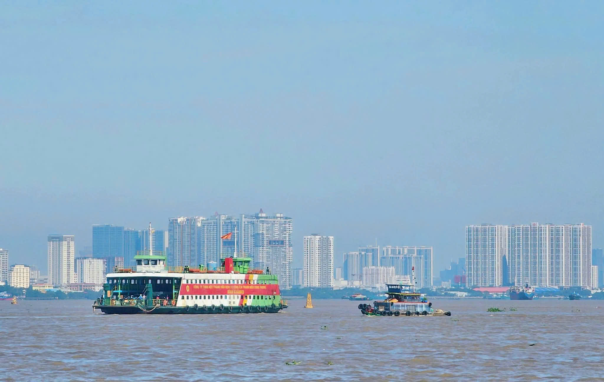
1. Phà Bình Khánh
- Kết nối: Nối Quận 7 / Huyện Nhà Bè với huyện Cần Giờ (vượt sông Nhà Bè rộng lớn).
- Vai trò: Là cửa ngõ chính và phổ biến nhất để đi từ trung tâm TP. Hồ Chí Minh vào Cần Giờ.
- Vận hành: Hoạt động liên tục 24/24 giờ mỗi ngày với nhiều chuyến phà tải trọng lớn nối liền hai bờ.
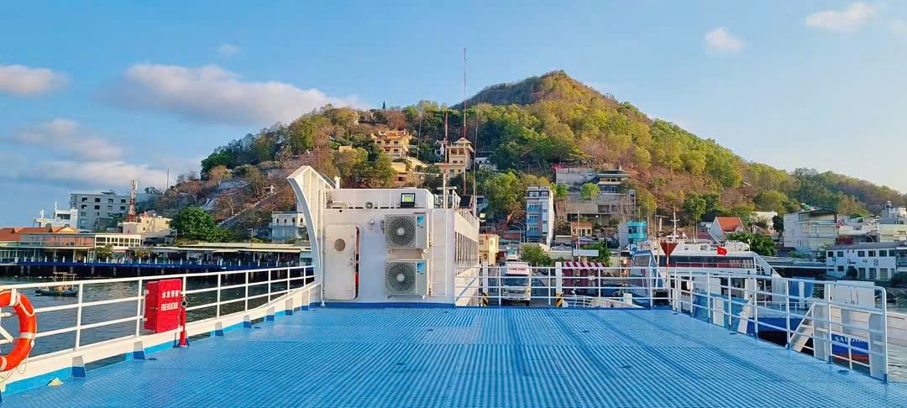
2. Phà Cần Giờ – Vũng Tàu
- Kết nối: Bến Tắc Suất (thị trấn Cần Thạnh, Cần Giờ) và bến gần Cảng vụ Hàng hải Vũng Tàu (Phường 1, TP. Vũng Tàu).
- Thời gian hoạt động: Từ 6h00 đến 21h00 (hoặc 4h00 - 22h00 tùy vận hành thực tế), tần suất khoảng 60 phút/chuyến.
- Thời gian chạy: Chỉ khoảng 30 - 45 phút vượt biển ngắm trọn cảnh vịnh Gành Rái.
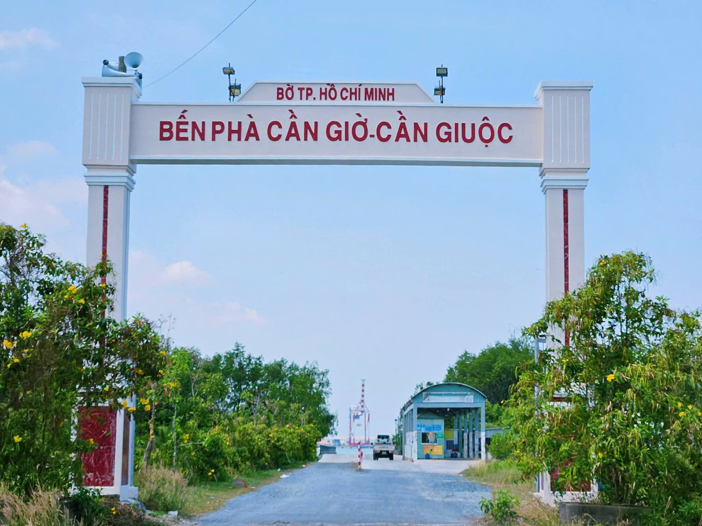
3. Phà Cần Giuộc – Cần Giờ
- Kết nối: Bến ĐT19 (Tân Tập, Cần Giuộc, Long An) và bến khu vực Vàm Sát (xã Lý Nhơn, Cần Giờ) vượt dòng sông Soài Rạp.
- Ý nghĩa: Tuyến đường tắt thuận tiện kết nối các tỉnh miền Tây (Long An, Tiền Giang) đến thẳng khu sinh thái Vàm Sát mà không cần qua trung tâm TP.HCM.

4. Đò / Tàu Qua Đảo Thạnh An
- Kết nối: Từ bến đò thị trấn Cần Thạnh qua xã đảo Thạnh An (Cần Giờ).
- Vai trò: Tuyến giao thông huyết mạch độc đạo phục vụ bà con ngư dân xã đảo và du khách yêu thích du lịch trải nghiệm, khám phá đời sống bình yên nơi đầu sóng.
- Thời gian di chuyển: Khoảng 45 phút lướt trên mặt nước ngắm rừng ngập mặn bao la.
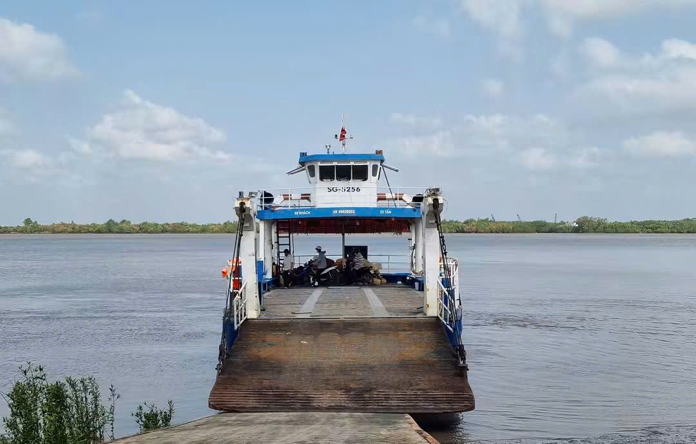
5. Phà Doi Lầu – Hiệp Phước
- Kết nối: Nối ấp Doi Lầu (xã An Thới Đông / Lý Nhơn, Cần Giờ) với xã Hiệp Phước (huyện Nhà Bè), vượt sông Soài Rạp.
- Vai trò: Rút ngắn cự ly di chuyển từ khu vực phía Nam Nhà Bè, KCN Hiệp Phước sang các xã phía Tây Cần Giờ và KDL Vàm Sát mà không phải đi vòng qua phà Bình Khánh.
- Phương tiện: Phục vụ người đi bộ, xe máy, xe đạp và vận chuyển nông - thủy sản địa phương.
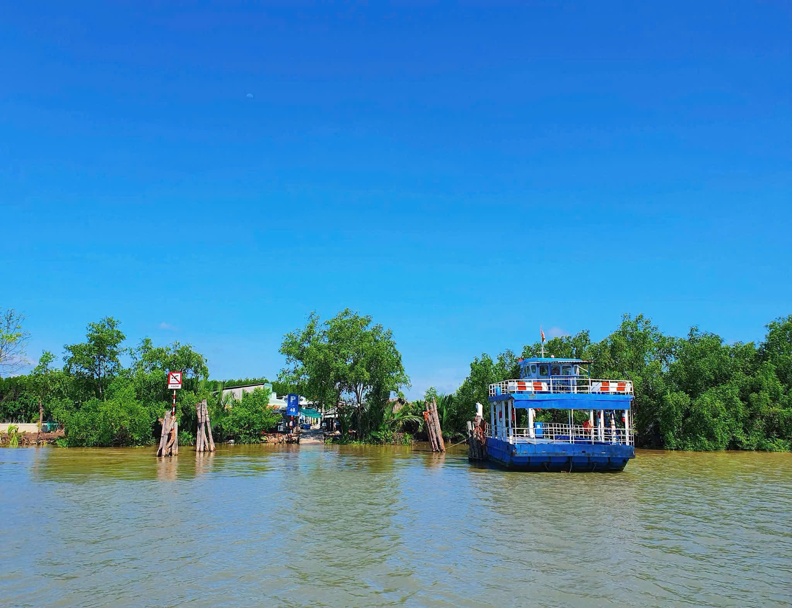
6. Phà An Thới Đông – Hiệp Phước
- Kết nối: Bến phà xã An Thới Đông (Cần Giờ) sang bờ xã Hiệp Phước (huyện Nhà Bè) qua sông Soài Rạp.
- Vai trò: Tuyến phà dân sinh trọng điểm kết nối bờ Tây sông Soài Rạp của Nhà Bè và vùng đệm rừng ngập mặn Cần Giờ, giúp việc giao thương nông sản, thủy sản giữa hai huyện ngoại thành diễn ra thuận tiện, nhanh chóng.
- Đặc điểm: Cung đường quen thuộc của công nhân làm việc tại KCN Hiệp Phước và bà con nuôi tôm, làm vườn Cần Giờ.
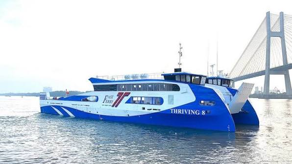
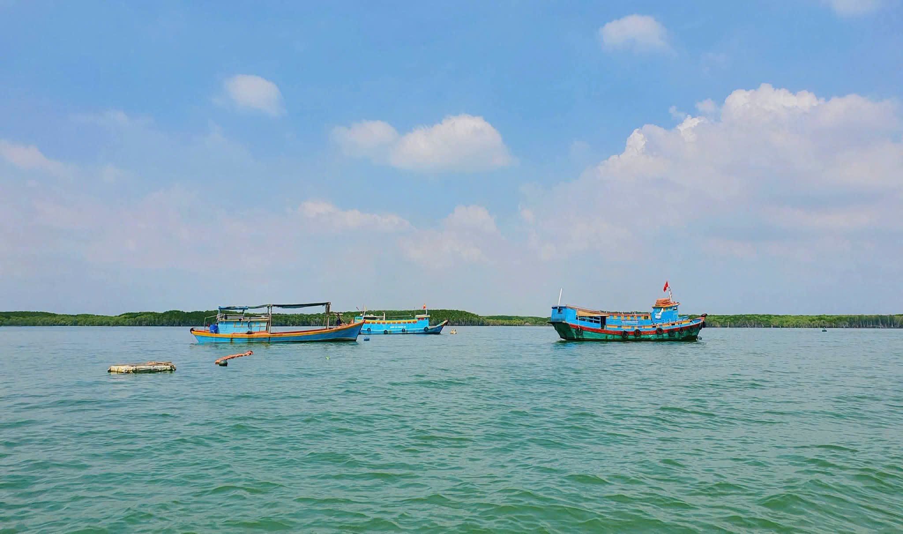
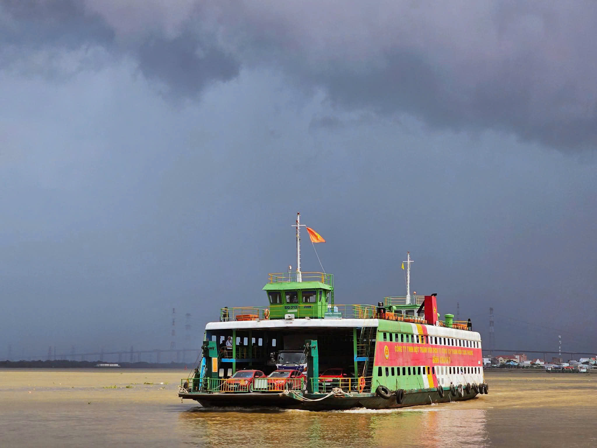
Hạ Tầng Kết Nối Trong Tương Lai
Bên cạnh các con phà truyền thống, trục giao thông bộ xương sống của huyện là đường Rừng Sác khang trang 6 làn xe dài hơn 36 km, chạy dọc từ Tây Bắc xuống Đông Nam huyện. Trong tương lai gần, dự án Cầu Cần Giờ (thay thế phà Bình Khánh) và tuyến cao tốc Bến Lức – Long Thành đi qua sẽ đưa Cần Giờ bứt phá trở thành đô thị du lịch sinh thái biển đẳng cấp quốc tế.
Lá Phổi Xanh & Đa Dạng Sinh Học
Huyện Cần Giờ sở hữu khu Rừng ngập mặn Cần Giờ – một quần thể đan xen giữa rừng cây đước, bần, mắm và hệ thống sông rạch dày đặc. Nơi đây chứa đựng các hệ sinh thái mang tính đa dạng sinh học rất cao với nhiều loài động thực vật đặc hữu của miền duyên hải Nam Bộ:
- Đất lâm nghiệp: 32.109 hécta (chiếm 46,45% diện tích toàn huyện).
- Đất sông rạch: 22.850 hécta (chiếm 32% diện tích toàn huyện).
- Vùng ngập mặn: Chiếm tới 56,7% tổng diện tích, là môi trường nuôi dưỡng vô số loài giáp xác, cá biển, nhuyễn thể và chim di cư.
- Hệ thống cù lao: Toàn huyện có khoảng 69 cù lao lớn nhỏ, tạo nên cảnh quan sông nước hữu tình hoang sơ.
Năm 2000, Rừng ngập mặn Cần Giờ vinh dự được UNESCO công nhận là Khu Dự trữ Sinh quyển Thế giới đầu tiên tại Việt Nam, đánh dấu sự hồi sinh kỳ diệu của một vùng đất từng bị tàn phá nặng nề trong chiến tranh.
Con Người Đôn Hậu Nơi Miền Cửa Biển
Dân số Cần Giờ đạt trên 71.500 người (mật độ 102 người/km²), tập trung đông nhất tại thị trấn ven biển Cần Thạnh và các xã dọc đường Rừng Sác. Cộng đồng dân cư nơi đây gồm có người Kinh (chiếm trên 80%), cùng người Khmer và người Chăm chung sống hài hòa, tạo nên nét đẹp văn hóa đa sắc màu.
Đời sống tâm linh của cư dân miền biển gắn liền với tục thờ Cá Ông (thần Nam Hải) – vị phúc thần bảo hộ ngư dân vượt qua sóng gió. Lăng Ông Thủy Tướng tại Cần Thạnh và Lễ hội Nghinh Ông Cần Giờ hằng năm vào rằm tháng 8 Âm lịch là Di sản văn hóa phi vật thể quốc gia thu hút hàng vạn khách thập phương.
Những Trang Sử Hào Hùng Qua Từng Thế Kỷ

Chuyến Thăm Của Đại Sứ Anh John Crawfurd (Thời Nhà Nguyễn)
Đại sứ nước Anh John Crawfurd trên hải trình đi sứ Xiêm và Cochinchina (Việt Nam) đã thả neo tại Cần Giờ vào ngày 24/8/1822. Trong nhật ký, ông ghi nhận ấn tượng đặc biệt sâu sắc về người dân Cần Giờ: ăn mặc lịch sự, hoạt bát, văn minh và tốt bụng. Crawfurd ngạc nhiên thích thú khi nước sông Cần Giờ rất trong trẻo, không bị đục ngầu như sông Hằng hay Mê Nam, và được dẫn đi chiêm bái các miếu thờ cá Ông linh thiêng của ngư dân.
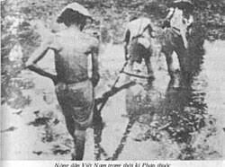
Thời Kỳ Pháp Thuộc & Sự Hình Thành Tổng Cần Giờ, An Thít
Ngày 18/12/1872, người Pháp thành lập tổng Cần Giờ gồm 5 làng. Đến ngày 28/2/1875, thành lập thêm tổng An Thít tách từ tổng Cần Giờ. Trải qua các giai đoạn, địa bàn Cần Giờ lần lượt thuộc phủ Tân Bình, tỉnh Gia Định, sau đó thuộc quận Nhà Bè và tỉnh Vũng Tàu.
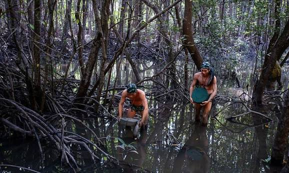
Chiến Khu Rừng Sác & Trung Đoàn 10 Đặc Công Rừng Sác
Trong kháng chiến chống Mỹ, Rừng Sác Cần Giờ trở thành căn cứ địa cách mạng vô cùng hiểm yếu, được ví như "mũi dao nhọn kề sát yết hầu sào huyệt đối phương". Các chiến sĩ đặc công nước Trung đoàn 10 kiên cường bám trụ giữa sình lầy ngập mặn, bom đạn và cá sấu dữ để làm nên những chiến công vang dội trên dòng sông Lòng Tàu.
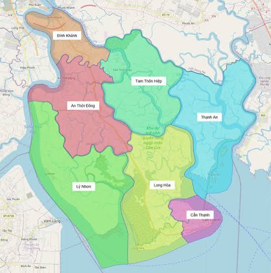
Huyện Duyên Hải Sáp Nhập Về TP.HCM & Đổi Lại Tên Cần Giờ
Ngày 29/12/1978, huyện Duyên Hải chính thức được sáp nhập từ tỉnh Đồng Nai vào Thành phố Hồ Chí Minh. Ngày 18/12/1991, huyện lấy lại tên lịch sử thiêng liêng là huyện Cần Giờ. Ngày 05/11/2003, Chính phủ ban hành quyết định thành lập thị trấn Cần Thạnh trên cơ sở xã Cần Thạnh.
1 Thị Trấn & 6 Xã Trực Thuộc
Huyện Cần Giờ hiện có 7 đơn vị hành chính cấp xã với tổng diện tích tự nhiên rộng lớn bậc nhất TP.HCM:
| STT | Tên Đơn Vị Hành Chính | Loại Hình | Diện Tích (km²) | Đặc Điểm Nổi Bật |
|---|---|---|---|---|
| 1 | Cần Thạnh | Thị trấn (Huyện lỵ) | 24,51 | Trung tâm hành chính, thương mại, Lăng Ông Thủy Tướng, bến tàu du lịch. |
| 2 | Long Hòa | Xã | 132,58 | Bãi biển 30/4, chợ hải sản Hàng Dương, Đảo Khỉ và Lâm viên Cần Giờ. |
| 3 | Lý Nhơn | Xã | 158,15 | Khu du lịch sinh thái Vàm Sát, vùng nuôi tôm và đồng muối truyền thống. |
| 4 | Thạnh An | Xã Đảo | 131,41 | Xã đảo biệt lập duy nhất của TP.HCM, giữ trọn nét bình yên mộc mạc. |
| 5 | Tam Thôn Hiệp | Xã | 110,38 | Vùng sinh thái lâm nghiệp, rừng đước nguyên sinh bạt ngàn. |
| 6 | An Thới Đông | Xã | 103,72 | Căn cứ Chiến khu Rừng Sác anh hùng, vườn cây ăn trái sinh thái. |
| 7 | Bình Khánh | Xã | 43,45 | Cửa ngõ kết nối TP.HCM qua phà Bình Khánh, các làng bè thủy sản. |
Chốn Linh Thiêng Giữa Miền Xanh Sông Nước
Toàn huyện hiện có 8 ngôi chùa cổ kính mang đậm nét kiến trúc Nam Bộ; trong đó cổ kính và lâu đời hơn cả là Chùa Thạnh Phước (Chùa Cây Me) tọa lạc tại thị trấn Cần Thạnh. Ngoài ra còn có Chùa Hải Đức hướng ra biển, Chùa Quang Minh Như Lai (xã Bình Khánh) và Chùa Nhơn Hòa (xã Lý Nhơn). Những mái chùa nép mình dưới rặng me cổ thụ và tán đước xanh tươi mang đến sự an yên, tĩnh lặng cho du khách tìm về nghỉ dưỡng tinh thần.